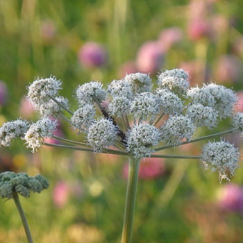

Angelica
Commonly found in tea and herbal remedies, the stem of the Angelica can even be made into candy. With over 50 species, the Angelica is also good for bees and other pollinators. Known for their large starburst flowers, it comes in white or green.
